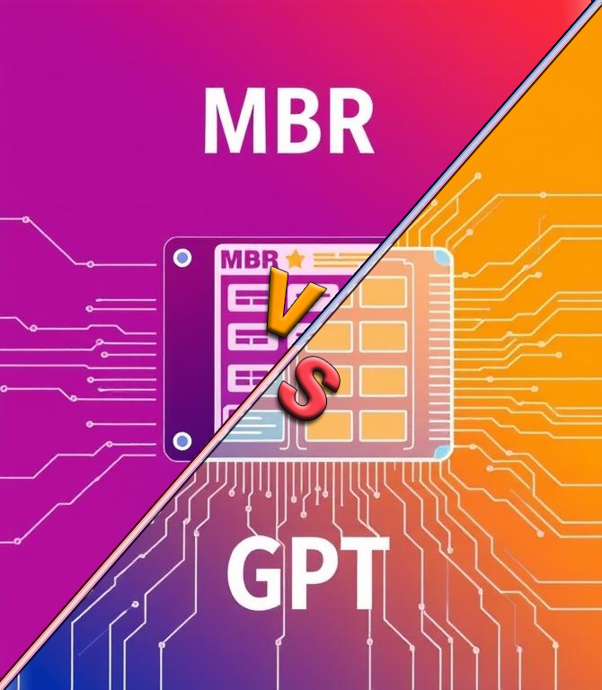

Мультизагрузка
В основе работы загрузчиков лежит выполнение специального кода, который указывает, откуда и что загружать.
Важно понимать несколько ключевых моментов:
Все загрузчики работают по схожему принципу: выполняется код загрузчика, который указывает, откуда и что загружать дальше — с MBR, PBR или EFI-раздела.
Важно не только сам файл загрузчика, но и место его расположения (MBR, PBR, ESP), а также способ взаимодействия с прошивкой (BIOS или UEFI).
Загрузчик — это связующее звено, которое управляет процессом загрузки, передавая управление от начального кода к ядру ОС или другому загрузчику.
Например, первичный загрузчик в MBR может передать управление загрузчику в PBR активного раздела, а тот уже загрузит ОС. В UEFI-системах загрузчик находится в специальном разделе ESP и запускается напрямую прошивкой.
Этот файл содержит инструкции, как и откуда загружать операционную систему или следующий загрузчик. Например, GRUB2, SYSLINUX, rEFInd — это разные загрузчики, которые могут запускаться с разных мест и по-разному управлять процессом загрузки.
Любой носитель информации — будь то SSD (SATA или NVMe), HDD, USB-флешка, microSD, встроенная память смартфона или планшета — устроены примерно одинаково с точки зрения хранения данных: это набор ячеек памяти, организованных в блоки и разделы, на которых записываются файлы и системные данные.
Для загрузки операционной системы важен именно загрузчик — специальный код, который запускается при включении устройства и указывает, откуда и как загружать ОС.
В ПК это может быть код в MBR, PBR или EFI System Partition (ESP) для UEFI-систем. В смартфонах и планшетах тоже есть свои загрузчики (bootloader), которые запускают ОС, но архитектура и способы загрузки могут отличаться.
Загрузочный файл или код — это ключевой элемент, который определяет процесс загрузки, независимо от типа носителя или устройства. Он указывает, где искать ядро ОС, как передать управление и какие параметры использовать.
Однако устройства могут иметь разные архитектуры, прошивки и способы загрузки:
Итог.
Что такое таблица разделов, где она хранится и зачем нужна?
Таблица разделов — это специальная структура данных на физическом накопителе (жестком диске, SSD, флешке и т.п.), которая содержит информацию обо всех разделах диска: где они начинаются, где заканчиваются, какого типа и как называются. Она нужна, чтобы операционная система и загрузчик понимали, как организовано пространство на диске и где искать данные или операционные системы.
Таблица разделов хранится в определённой области диска, в зависимости от типа таблицы:
Что такое MBR и GPT?
MBR (Master Boot Record) — это традиционный формат таблицы разделов, который хранится в первом секторе диска. В MBR содержится:
Ограничения MBR:
GPT (GUID Partition Table) — современный стандарт таблицы разделов, разработанный для замены MBR. Особенности GPT:
Итог
Что такое первичный и вторичный загрузчики MBR и PBR?
MBR (Master Boot Record) — это специальный первый сектор на физическом носителе (обычно на жестком диске, но может быть и любая флешка, microSD, любой SSD), который содержит код загрузчика и таблицу разделов диска. В MBR записывается первичный загрузчик, который запускается при включении компьютера. Его задача — начать процесс загрузки операционной системы.
PBR (Partition Boot Record) — это загрузочный сектор конкретного раздела диска. В нем находится вторичный загрузчик, который более сложный и отвечает за загрузку операционной системы из конкретного раздела.
Кратко о процессе загрузки.
Итог.
Так устроена классическая схема загрузки с использованием MBR и PBR на любом носителе с разделами. Причем, на любом носителе при любой таблице разделов всегда есть хотя бы 1 раздел.
Что такое EFI загрузка?
EFI (Extensible Firmware Interface) или точнее UEFI (Unified EFI) — это современный интерфейс между прошивкой компьютера и операционной системой, который заменяет традиционный BIOS. В отличие от BIOS, UEFI поддерживает более гибкую и мощную систему загрузки.
При загрузке с UEFI:
Почему носитель должен быть отформатирован в FAT32?
Стандарт UEFI требует, чтобы EFI System Partition была отформатирована в файловой системе FAT32 (для сменных носителей допускается FAT16 или FAT12, но FAT32 — самый распространённый вариант).
Причина в том, что UEFI прошивка содержит встроенную поддержку чтения FAT32, но не поддерживает другие файловые системы, например NTFS или exFAT, на этапе загрузки.
Если носитель отформатирован в NTFS, UEFI не сможет прочитать загрузочные файлы, и загрузка не произойдет без дополнительных ухищрений (например, специальных драйверов или загрузчиков).
FAT32 — это универсальная, простая и широко поддерживаемая файловая система, которая гарантирует совместимость с UEFI.
Пример структуры загрузочного носителя для UEFI:
В 32 битных системах UEFI ищет в той же самой папке файл «BOOTia32.EFI»
Что такое GRUB4DOS, SYSLINUX и GRUB2?
Мультизагрузочные флешки создаются для того, чтобы с одного USB-носителя можно было загружать разные операционные системы, утилиты восстановления, установщики и т.п.
Для этого на флешку устанавливают загрузчик (GRUB4DOS, SYSLINUX или GRUB2), который при старте показывает меню с выбором, что именно загрузить.
GRUB4DOS часто используют из-за его гибкости и возможности загружать ISO-образы напрямую, а также из-за поддержки старых BIOS-систем.
SYSLINUX применяют для простых загрузочных флешек с Linux, где не требуется сложное меню или поддержка UEFI.
GRUB2 выбирают для более сложных задач, особенно если нужна поддержка UEFI, работа с разными файловыми системами и расширенные возможности меню загрузки.
Иногда на одной флешке комбинируют несколько загрузчиков, например, GRUB4DOS и SYSLINUX, чтобы расширить совместимость и функционал.
Что такое rEFInd и зачем он нужен?
rEFInd — это современный загрузочный менеджер для систем с UEFI/EFI, который позволяет удобно выбирать между несколькими установленными операционными системами на одном устройстве. Он является форком более старого проекта rEFIt и отличается простотой, красивым графическим интерфейсом и автоматическим обнаружением ОС без сложной настройки.
Основные преимущества rEFInd:
Почему и как комбинируют rEFInd, GRUB2, GRUB4DOS и SYSLINUX?
В реальных мультизагрузочных сценариях часто используют комбинацию нескольких загрузчиков, чтобы обеспечить максимальную совместимость и гибкость:
Такая комбинация позволяет:
Почему rEFInd не всегда удобен и почему от него часто отказываются на флешках в пользу комбинации GRUB2 + GRUB4DOS + SYSLINUX?
Хотя rEFInd — современный и красивый загрузчик для UEFI, на практике он не всегда оказывается удобным и надежным для использования на мультизагрузочных флешках. Вот основные причины:
rEFInd работает только в UEFI-режиме и не поддерживает BIOS (Legacy) загрузку. Многие флешки и компьютеры требуют поддержки обоих режимов, чтобы быть универсальными. В то время как GRUB4DOS и SYSLINUX отлично работают в BIOS-режиме, rEFInd не может заменить их полностью.
На практике rEFInd часто используется как «первичный» загрузчик, который просто запускает GRUB2, а уже GRUB2 выполняет основную работу по загрузке ОС и управлению меню. То есть rEFInd не всегда выполняет всю работу самостоятельно, а служит лишь «переходником».
Настройка rEFInd может быть сложной, особенно если нужно управлять загрузкой с разных носителей, флешек и разделов. Иногда он не всегда корректно распознает все загрузочные образы или не позволяет гибко настраивать меню, что неудобно для мультизагрузочных флешек.
rEFInd может "навязывать" себя первым в списке загрузки UEFI, что не всегда удобно, особенно если флешка используется на разных компьютерах с разными настройками прошивки. Это требует дополнительной настройки, чтобы rEFInd не мешал загрузке с других устройств.
SYSLINUX и GRUB4DOS обеспечивают отличную поддержку BIOS-режима и работу с FAT32 и другими файловыми системами, что важно для загрузочных флешек с утилитами и старыми ОС. rEFInd же ориентирован на UEFI и FAT32 ESP-разделы, что ограничивает его универсальность.
Почему выбирают комбинацию GRUB2 + GRUB4DOS + SYSLINUX на флешках?
rEFInd — отличный загрузчик для UEFI с красивым интерфейсом, но он ограничен только UEFI, сложен в настройке и часто просто запускает GRUB, не заменяя его полностью. Поэтому на мультизагрузочных флешках часто отказываются от rEFInd в пользу комбинации GRUB2 + GRUB4DOS + SYSLINUX, которая обеспечивает поддержку и BIOS, и UEFI, гибкость, надежность и удобство работы с разными ОС и утилитами.
Что такое BCD в Windows?
BCD (Boot Configuration Data) — это специальный файл конфигурации загрузчика Windows, который содержит информацию о доступных операционных системах, параметрах их загрузки и порядке выбора. По сути, это современный аналог старого файла boot.ini, но с более гибкой структурой и возможностями.
Почему BOOTICE удобен для редактирования BCD, особенно на мультизагрузочных флешках?
BOOTICE — это мощный и компактный инструмент для работы с загрузочными записями и разделами, который особенно популярен среди специалистов и энтузиастов, создающих мультизагрузочные флешки.
BCD — ключевой файл конфигурации загрузчика Windows, управляющий меню и параметрами загрузки ОС.
BOOTICE удобен тем, что позволяет легко и быстро редактировать BCD и другие загрузочные записи как для BIOS (MBR/PBR), так и для UEFI (ESP-раздел), что особенно важно для мультизагрузочных флешек.
Возможность работать с обоими режимами загрузки и редактировать меню из разных мест на флешке делает BOOTICE незаменимым инструментом для создания универсальных загрузочных USB-носителей.
Что такое бинарный файл?
Бинарный файл — это файл, который содержит данные в виде последовательности байтов, не обязательно интерпретируемых как текст. Эти байты могут представлять любую информацию: текст, изображение, звук, видео или исполняемую программу. В отличие от текстовых файлов, бинарные файлы могут содержать любые значения байтов, включая нулевые, которые в текстовых файлах обычно отсутствуют.
Что такое шестнадцатеричный код выполнения и ассемблерный код?
Зачем нужны ResHacker и Restorator?
ResHacker (Resource Hacker) и Restorator — это инструменты для просмотра и редактирования ресурсов внутри исполняемых файлов Windows (например, иконок, меню, диалогов, строк и т.п.). Они позволяют изменять интерфейс программ без перекомпиляции исходного кода, что полезно для локализации, кастомизации или создания патчей.
Можно ли любой файл просматривать как текстовый и писать в файл изображения любой текст?
Можно ли любой файл просматривать как текстовый и писать в файл изображения любой текст?
Технически любой файл можно открыть и просмотреть как текст, но содержимое бинарного файла в текстовом виде будет выглядеть как набор непонятных символов, так как многие байты не соответствуют печатным символам.
Аналогично, Можно ли дописывать текст в конец файла изображения?
Да, технически в любой файл, включая изображение (например, JPG), можно дописать произвольные данные в конец файла.
Форматы изображений, как правило, при чтении ориентируются на заголовок и структуру данных внутри файла, поэтому дополнительные данные в конце часто игнорируются программами просмотра изображений и не влияют на отображение картинки.Это свойство используется в различных задачах, например:
Почему это работает?
Форматы изображений, например JPEG, имеют чётко определённую структуру и маркеры конца файла.
Дополнительные данные после конца файла обычно игнорируются стандартными программами.
Поэтому можно «дописать» текст в конец файла, и при этом изображение останется корректно отображаться.
В Linux системах в любой файл в самый конец можно дописать что угодно в виде комментария через решетку «#», что строка не воспринималась никаким кодом.
Патчи и кряки часто создаются путем изменения бинарного содержимого файлов — например, с помощью хекс-редакторов или специализированных инструментов (дизассемблеров, редакторов ресурсов). Вносятся изменения в машинный код или ресурсы программы, чтобы изменить её поведение, убрать защиту или добавить новые функции. Это требует понимания структуры файла и кода, а не просто записи текста в файл.
Типы файлов и их обработка.
В Windows действительно существует множество форматов файлов (например, .exe, .dll, .docx, .jpg и т.д.), и для каждого формата обычно используется своё программное обеспечение. Windows ориентирована на ассоциации файлов с программами, и расширение файла играет важную роль в определении, как его открыть.
В Linux ситуация другая: файловая система рассматривает практически всё как файл — включая устройства, процессы и т.д. Однако не все файлы текстовые. В Linux есть как текстовые файлы (например, скрипты, конфигурации), так и бинарные (исполняемые программы, библиотеки). Важным критерием для исполнения файла является флаг «исполняемый» (execute permission) в правах доступа, а не расширение файла. То есть, чтобы файл можно было запустить, он должен иметь соответствующие права, а не обязательно иметь определённое расширение.
Файловая система и структура.
В Linux используется единая иерархия каталогов, где всё начинается с корня /. Устройства и ресурсы представлены как файлы в этой структуре.
В Windows файловая система построена на буквах дисков (C:, D: и т.д.), и устройства обычно не представлены как файлы.
Исполняемые файлы.
В Windows исполняемые файлы обычно имеют расширение .exe или .dll, и система ориентируется на расширение для запуска.
В Linux исполняемый файл — это файл с установленным флагом исполнения, независимо от расширения. Например, скрипт без расширения может быть исполняемым, если у него есть соответствующие права.
Итог.
Таким образом, разница в подходах к файловой системе и обработке файлов существенна, но не сводится к тому, что в Linux «все файлы текстовые».
Использование команды source и файлов начальных данных в Linux.
В Linux команда source (или точка .) используется для выполнения команд из файла в текущем сеансе оболочки. Например, source .bashrc или source myscript.sh загружает и выполняет содержимое этих файлов, не создавая нового процесса. Это позволяет, например, задавать переменные окружения, функции и алиасы, которые будут доступны в текущей сессии.
Такие файлы, как .bashrc, .profile, .bash_profile и другие, служат локальными файлами начальных данных (инициализации) для настройки среды пользователя. Они позволяют задавать переменные окружения, пути к библиотекам, алиасы и прочие настройки, которые применяются только для конкретного пользователя или сессии.
В Windows такого подхода нет?
В Windows нет прямого аналога команды source в командной строке cmd.exe, но в PowerShell есть похожие механизмы (например, . для dot-sourcing скриптов). Однако в классическом cmd.exe обычно переменные окружения задаются через системные настройки или через запуск отдельных скриптов, которые не влияют на текущую сессию так гибко, как в Linux.
Зачем использовать локальные файлы начальных данных?
Таким образом, в Linux использование source и локальных файлов конфигурации — это мощный и гибкий способ управлять средой, которая действительно отличается от подходов в Windows.
BAT/CMD файлы в Windows как аналог локальных файлов инициализации в Linux.
В Windows батники (.bat, .cmd) часто используются для задания переменных окружения, изменения путей (PATH) и запуска программ с нужными настройками. Это позволяет изолировать конфигурацию для конкретного приложения или проекта, не влияя на глобальные системные переменные.
Пример с настройкой путей для Portable Python и виртуальных окружений — классический способ сделать запуск более управляемым и избежать конфликтов между разными версиями библиотек и интерпретаторов.
Например, файл «Python-portable-3.10.5-x64.bat».
@cd/d "%~dp0" @echo off SET PATH=%CD%\Portable-Python-3.10.5-x64\;%PATH% SET PATH=%CD%\Portable-Python-3.10.5-x64\Scripts\;%PATH% SET WORKON_HOME=%CD%\env-x64\ DOSKEY clear=cls cmd.exe
Здесь %~dp0 — путь к каталогу, где находится батник, что позволяет делать скрипт переносимым.
Такой подход действительно похож на использование локальных файлов инициализации в Linux (.bashrc, source), где вы задаёте локальные переменные и пути, чтобы не "засорять" глобальную среду и избежать конфликтов.
Отличия и особенности.
Использование батников для локальной настройки среды — это действительно удобный и распространённый способ в Windows, аналогичный по идее локальным файлам инициализации и source в Linux. Это помогает сделать программы более управляемыми, изолированными и стабильными.
Почему важно сохранять текстовые файлы в разных кодировках между Linux и Windows?
Основная причина — разные операционные системы традиционно используют разные кодировки для текстовых файлов, и это влияет на корректное отображение и обработку текста.
Если файл, сохранённый в Windows в ANSI (CP-1251), открыть в Linux, который ожидает UTF-8, то кириллические символы могут отображаться некорректно (абракадабра). Аналогично, если файл сохранён в UTF-8, а Windows-программа ожидает ANSI, то тоже возможны проблемы с отображением текста.
Практические моменты.
Важно сохранять текстовые файлы в обеих кодировках (ANSI и UTF-8), чтобы обеспечить корректное чтение и отображение текста как в Windows, так и в Linux.
Это связано с историческими и техническими особенностями кодировок, используемых в этих ОС. UTF-8 — более универсальная и современная кодировка, но Windows-программы и консоли иногда требуют ANSI (CP-1251) для правильной работы с русским текстом. Если вы работаете в смешанной среде, лучше использовать UTF-8 и при необходимости настраивать окружение Windows для поддержки UTF-8, либо конвертировать файлы в нужную кодировку.
В идеале сохранять по 2 файла в 2 разных кодировках для полной совместимости - и «ansi», и «utf-8».
Почему браузеры показывают UTF-8 корректно через интернет, а локальные текстовые файлы — ANSI?
Основная причина связана с тем, как браузеры определяют и обрабатывают кодировку текста в разных ситуациях:
Через интернет браузеры ориентируются на явные указания кодировки (обычно UTF-8) и показывают текст правильно.
При открытии локальных файлов браузер полагается на системные настройки и «угадывает» кодировку, поэтому ANSI-файлы Windows отображаются нормально, а UTF-8 без BOM — могут отображаться некорректно.
Чтобы избежать проблем с локальными файлами, рекомендуется сохранять их в UTF-8 с BOM или явно указывать кодировку в HTML-файлах.
Поэтому локальные файлы в ANSI часто отображаются корректно, а UTF-8 без BOM — нет.
В Windows локальные текстовые файлы часто сохраняются в ANSI (например, CP-1251 для русского языка). Браузер, открывая такой файл локально, может по умолчанию использовать системную локаль или ANSI-кодировку, чтобы правильно отобразить текст. Если файл сохранён в UTF-8 без BOM (специального маркера начала файла), браузер может не распознать кодировку и показать «кракозябры».
Когда вы открываете простой текстовый файл напрямую (например, через file://), браузер не всегда получает явную информацию о кодировке. В этом случае он пытается угадать кодировку или использует системные настройки.
Таким образом, при загрузке страницы из интернета браузер «знает», что текст в UTF-8, и отображает его адекватно.
Веб-серверы обычно указывают в заголовках ответа или в метатегах HTML, что содержимое страницы закодировано в UTF-8. Это стало стандартом для веба, так как UTF-8 поддерживает все языки и символы. Браузеры, получая такую информацию, корректно интерпретируют и отображают текст в UTF-8.
Нюансы выбора ПО.
Есть несколько важных нюансов выбора ПО для создания действительно хороших мультизагрузочных флешек.
Дело не в том, что мне нравятся или не нравятся старые или портативные версии, а в том, что новые или свежие версии программ скорее всего не совместимы со старыми ОС - такими как Windows 7 или даже XP, если вдруг однажды понадобится. А иногда даже требуют неких дополнительных каких-то библиотек или драйверов.
Создание таких флешек преимущественно отдается именно Windows, начиная с 7-ки. Но это не значит, что тоже самое вы не сможете сделать из любой другой ОС - будь то хоть Linux, хоть MacOS или буквально считай почти MSDos.
Единственным исключением является только сам загрузчик Windows, начиная с 7-ки и выше - под названием «BCD (Boot Configuration Data)». Для него качественных альтернатив редакторов, к большому сожалению, просто нет.
Програмное обеспечение.
1. Первое что нам понадобится - это текстовый редактор Geany (оф. сайт, Портативная версия 1.37.1 x86), но не простой.
В одной из глав выше я писал, что в каждой ОС и всех текстовых файлах важна кодировка. В каждом загрузчике есть конфигурационные файлы, которые по сути являются текстовыми в определнных кодировках. И чтобы их не нарушать кодировку конфигурационных файлов, лучше редактировать их сразу правильно. А значит обычные встроенные в любую ОС текстовые редакторы не подойдут, именно потому что они могут испортить кодировку конфигурационных файлов загрузчиков и в итоге флешка просто не сможет загрузится.
Предлагаемый мною текстовый редактор не только адекватно воспринимает и сразу правильно работает с любой кодировкой, но ещё и отображает коды программирования разными цветами не зависимо от языка программирования просто для вашего удобства.
Он есть как для Windows. так и для Linux и других ОС. Свежая версия для ОС от 10-ки и старше. Портативная должна работать хоть на 7-ке, хоть даже на XP, вроде бы.
Если не сможете им воспользоваться, есть альтернативный текстовый редактор, но только для Windows - «Notepad ++». Для Linux подойдут такие как: «Leafpad» и «Gedit» В консольном варианте Linux скорее всего только один редактор «Nano», но с осторожностью.
2. Далее нам понадобится универсальная утилита BOOTICE x86 ru, русскоязычная версия.
Она универсальная тем, что выступает не только как редактор разделов флешек, но и как единственный, качественный и понятный редактор BCD (Boot Configuration Data) файлов загрузчиков Windows.
В Windows в качестве альтернативы вполне можно воспользоваться и встроенным редактором, но с небольшой оговоркой - он может не видеть всех разделов флешек.
В Linux же есть целых 2 варианта редакторов разделов - это «GParted» графический редактор разделов и консольный вариант «cfdisk».
3. Далее понадобится несколько архивов самих установочников загрузчиков. Не волнуйсте, установка возможна не только одним единственным Bootice из Windows, но также и из Linux, и даже из MSDos, если вдруг однажды придётся.
4. Теперь сами загрузчики.
5. Примеры конфигурационных файлов загрузчиков.
Примеры всех конфигурационных файлов загрузчиков - и для GRUB4DOS, и для SysLinux, и для GRUB2 смотрите здесь.
Там вы найдете множество разных вариантов настроек для очень многих случаев любых настроек загрузки ОС - будь то хоть совместно Windows 7 + Alkid Live DVD, или Windows 10 + AlKid Live USB + Linux Mint, и многие многие другие.
6. Остался только Qemu (QemuBootTester.zip для Windows, 32 бит для Windows, 64 бит для Windows) для тестирования загрузочных флешек.
Для Linux установку смотрите здесь.
НО, в Linux еще надо установить некий GUI, иначе отображение результата не будет как такового. Например в Linux Mint - это «qemu-system-gui» кажись. Кажись, потому что в разных дистрибутивых Linux, у них даже названия разные. В Archlinux например вообще вот такой список пакетов потребуется установить: qemu-full qemu-img qemu-ui-gtk qemu-tools edk2-ovmf qemu-block-gluster qemu-block-iscsi.
Понадобится еще один файлик - edk2-ovmf-202505-1-any.pkg.tar.gz - имитация загрузки UEFI режима, если вы не скачивали QemuBootTester, в который она встроена, чтобы не перезагружать вашу ОС для проверки получившейся мультизагрузочной флешки.
7. Установка самих загрузчиков.
Инструкция установки MBR и PBR из утилиты Bootice. (Ниже список одной и той же инструкции в разных форматах для онлайн чтения)
Инструкция установки MBR и PBR из CMD, Linux или даже MSDOs.
Теперь подробно поговорим обо всех указанных в главе ПО архивах и как их использовать в любой ОС с конкретными примерами. Для этого создадим пару мултизагрузочных флешек для разных случаев.
Например, пусть будут установчная флешка с Windows 10 и парой других ОС или дополнительных утилит. И флешка для простого восстановления доступа, настроек или просто ремонта.
Все смежные и спользуемые внутри загрузчиков утилиты также обговорим - какая и зачем нужна.
Ну а сегодня на этом всё. Всем Добра и Удачи!
Copyright © xx.xx.xxxx by Mikhail Artamonov